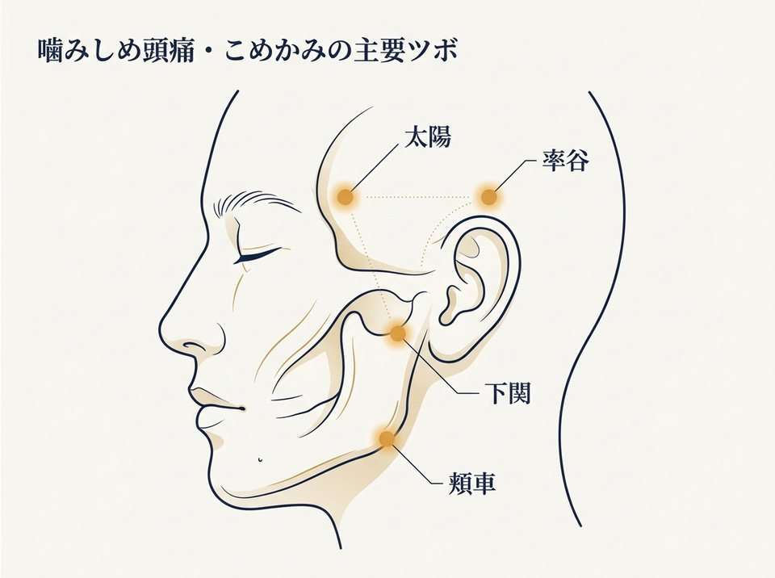

脳過敏症候群の鍼灸
脳の過剰興奮による聴覚過敏・頭鳴り・めまい・片頭痛に対し、筋肉・神経・内臓の乱れから脳を鎮める鍼灸解説。


院長YouTube解説・関連動画


頭鳴りとは頭の中から音が聞こえること
この症状でやっかいなのは、MRIやCTなどでは問題が見られず「様子見」されることが多くあります。
病院によって対応は異なり、自律神経失調症や心の病、うつ病などと診断されることもあります。
西洋医学と東洋医学、両方の視点からの知識を知っておいた上で理解することが重要です。
頭鳴り、耳鳴りは脳の過剰興奮から
頭鳴りは脳からくる耳鳴りの悪化版です。脳の側頭葉にある聴覚野が過剰興奮した場合、脳からくる耳鳴りになります。
聴力や耳の構造には全く問題がなく、ウイルスの感染や交通事故、精神的ストレスなどの色々な要因で発症します。ストレスがかかると目がピクピクしたり過敏性腸症候群が起こったり顎や背中のニキビが発生したり毛嚢炎が起こったりなどの症状が起こるように、脳が過剰に興奮すると色々な症状が出るのです。
症状は人によって違います。脳が興奮するエリアによって肩こりが起こったり、腰痛や頭痛が現れたりというようにエリアによって症状の出方が変わります。
頭鳴りの1番有力な発生機序はグルタミンサイクルの変調です。
脳のシナプスが神経を伝達する際にするグルタミン酸という物質を出して受け取って興奮を伝えていきます。グルタミンを出して受け取るグルタミンサイクルが何らかの影響で止まってしまうと停滞箇所で興奮が持続します。側頭葉の聴覚野で興奮が続いてしまい、それを音として認識して脳からくる耳鳴りが起こるのです。
範囲が広くなっているのか場所によって違うのか把握できませんが、悪化していくと音がどんどん上にずれて行ったり後ろにずれていき頭鳴りになります。
頭鳴りと耳鳴りの違い
🎥 他のYouTube切り抜き・解説を読む（あと4件）▼
頭鳴りと耳鳴りの対処法
頭鳴り・耳鳴りに悩む人は心の問題を抱えている場合がほとんどです。
また、常に考え事や忙しさに追われ脳が過剰に働きすぎているのも原因の一つといえます。症状を落ち着かせるためためには、まず大前提として休息が重要です。
リラックス効果のある音楽は、不快な音から気を逸らすアプローチがあります。ただし、心の持ちようによって効果が期待できない場合もあります。
大切なのは、気持ちをリラックスさせ、決して原因を突き詰めようとしないことです。神経質になると、更に症状を悪化させてしまいます。
「病は気から」という言葉があるように、頭鳴り・耳鳴り症状の最大の原因は心の疲れと言われております。1日の中で何も考えずにいる時間を5分からでも作ってみましょう。α波などヒーリング効果の高い音楽を流すのも有効な方法です。
脳波による脳過敏症候群の判断はあまり有効ではありません。鍼灸師の立場では脳過敏症候群は脳の興奮であることは間違いありませんが、興奮させる要因を１個１個取っていくことが鍼灸の考え方です。
体の構造でもある筋肉、神経、リンパ、内臓的な要因である肺や食道、心臓や胃、膀胱、前立腺、卵巣や子宮などの色々な要因を考えなければ脳が興奮する要因を取ることができないとことを最近強く感じています。
東洋医学は全体で見るものです。東洋医学の概念は円で考えます。球体で全てバランスよく整っていることがベストです。あれを改善しよう、これを改善しよう、これが原因だということではないのです。
凸凹や歪みが生じると症状が生まれるという考え方のため、この円を作り出す施術をしなければいけないと昔師匠に教わったことがあります。
医者を否定するわけではありませんが、現実問題、脳波と症状は一致しないことがほとんどです。一致していれば脳波の状態を改善したりそれをゴールにしたりしたいのですが結果を見てみたら全然関係がないのがリアルです。
耳鳴り、頭鳴りの改善の過程
当院に来院される方は、耳鳴り頭鳴りの人が1番多いです。そのような人が1番悩むポイントはどこで鍼灸を終えれば良いのかということです。うるさい状態から良くなってきて安定した状態を壊したくないため、どこで卒業したら良いのか、卒業後はどうなのか、という悩みを漠然と抱えています。
当院に通院されている耳鳴り頭鳴りの方のほぼ半数は1番辛い時を10とした時の辛さでいうと、0と2をうろうろしています。耳鳴りの症状の特徴を理解することで施術から卒業しやすくなります。
脳からくる頭鳴り耳鳴りの改善には、神経の可塑性という脳の素晴らしい能力が重要です。神経の可塑性は脳が新しい経験や刺激を受けることで脳の構造や機能を変化させる能力のことです。これにより脳自身を再構成し機能を回復させることができるのです。鍼の刺激を受けることで脳の可塑性を上げ、脳からくる耳鳴りが落ち着いていくという回復過程をたどります。
当院では、耳鳴り頭鳴りは脳の側頭葉にある聴覚野が異常に働くことで起きると考えています。病院で処方される薬はSSRIやリボトールなどが多いですがこれらも脳の過覚醒、過剰興奮を落ち着かせる薬です。サウンドセラピーは特定の音を使って脳の新しい反応を学習させることで、脳は耳鳴りの音をより脳は耳鳴りの音を無視する方法を学び異常な神経活動を正常化する新しい経路を形成する改善方法です。
鍼は神経フィードバック療法とも言われていて、皮膚に存在するツボや特定の領域を刺激することで脳にポジティブな影響を与えることができ神経回路の再構成を助けてくれる方法です。
耳鳴りや頭鳴りの症状は人によってゴール設定が全然違います。人によって考え方や症状との向き合い方が違うのです。その方の目指すゴールに向かって施術をしますが、ここで理解しないといけないことがあります。
耳鳴りと頭鳴りの改善の経過と安定化についてです。耳鳴りの改善の経過では変動があります。1番辛いのは変動期でうるさい時と楽な時に大きな差があり、この差によって悩んでしまうのです。
鍼をすることでどんどん音が下がっていきますが、下がってきてもうるさい時はうるさいです。楽な時とうるさい時の差が少なくなってくると、多くの場合慣れてきたというリアクションをもらいます。
1番うるさい時を10とすると、うるさい時が2くらいまで下がってきて静かな時が０になるともう卒業で良いかなと思うのですが、そうはいきません。耳鳴りの静かな時を感じてしまうとうるさい時の2が煩わしくなるのです。当院では多くの人がこの2を下げるための施術を行なっています。
頭鳴り耳鳴りは下がってきたら施術の間隔を必ず空けることが大事です。鍼をすると体に変化が起きるため施術の影響を受けた脳神経は少なからず興奮します。脳の再編成に関しては時間がかかるため待つ時間が必要なのです。待つ時間を作ることで安定してきて0と1をうろうろしたり0.5が続くようになります。これが安定化です。
当院での施術間隔は最長2ヶ月に1回で、多くの場合は1ヶ月に1回です。
安定化すると不規則な刺激や体の負荷に対して耳鳴りや頭鳴りとして反応しなくなります。そうなると気にならなくなります。そこが卒業のタイミングです。
施術の期間を空けてほしいというのは、体の悪い箇所や回復を妨げるフックがなくなっている人に、神経の可塑性、再編成を促すためにお願いしています。
中には勘違いする人もいます。2くらいになるともうほとんど改善したと思い、整体に行って改善をしようとするのです。それによって悪化して戻ってくる人も多いです。2まで音が下がることと安定していることは違います。
間隔を空けるべき人は、
・悪いフックが取れて０〜10の幅が狭くなった人
・低気圧や体の負荷、新しい挑戦で音の変動がない人
期間を空ける提案は、決して見捨てたりしているわけではありません。当院では安心して卒業してもらえる施術をしています。改善するためには安定させる必要がありそのためには期間を空けなければいけないのです。
頭鳴りは精神の病気の1つで、脳波を測定し抗うつ剤を飲んでも10年20年改善しない人もいます。実際に改善しないタイプ人もいます。改善しないタイプが悪いわけではありませんが、改善するタイプの人は安心して施術を続けてほしいと思います。
少しでも頭鳴りが改善する方法は？
Q.キーンとなる頭鳴りに６年悩まされています。いろんな病院や鍼灸にも行きましたが良くならず仕事もできず実家で過ごしています。今は漢方を飲んでいますが、少しでも改善するための情報を教えてほしいです。
A.当院では頭鳴りに効く漢方はないと考えています。病気はこうすることでこういう症状が出るということがある程度決まっていますが、漢方は狙っている概念が違います。漢方を処方されたということは体質を変えて行こうという狙い方だと思いますが、当院では頭鳴りを体質から改善したことがないためなんとも言えないというのが本音です。
自分でできる頭鳴り対策はとにかく寝ることです。睡眠導入剤や安定剤、抗うつ剤など寝るためには何を使っても良いので、とにかく寝てほしいです。頭鳴りは体の構造が改善しないと改善していきません。
先日、ゲップとオナラが止まらないという人がいらっしゃいました。病院では原因が自律神経からきていると言われたと言いますが、自律神経の薬を処方されていませんでした。先生の本音で判断と本音が少し違うこともあるのです。自律神経失調症という判断でも、漢方を渡したり何もせずに休むようにいうこともあります。その方は脳の過覚醒からくる腸の蠕動運動の過剰活動だったためそのアプローチを行いました。
同じように頭鳴りも色々な原因から起きるのです。そのため、原因を潰していかないといけません。ただし、原因の捉え方は担当する先生によって違うためそこが難しいのです。
鍼灸は一人一流派と言われるくらいやり方と考え方、鍼の仕方が違います。そのためどこの鍼灸院が良いというお勧めはできませんがとにか薬を使ってでも寝てほしいです。
ただし、頭鳴りが起こる体になっている場合は改善が難しいため、体の構造から改善に取り組むことをお勧めします。
ラスベガスから来院のWさんのケース
《頭鳴りを感じた時期》
頭鳴りは2024年1月に発症。セルフケアをしたがなかなか効果がなく、アドバイスしたサプリも効果がなかったため、日本に来て来院することを決意。3月に来院。
《頭鳴りが酷くなるきっかけ》
なっている音の度合いは１０を最大にすると７くらい。体に悪いところが３つあった。
《銀座そうぜん鍼灸院の来院経緯》
YouTubeをみて来院
30代女性Tさんのケース
《悩んでいる症状》
脳過敏と聴覚過敏。耳鳴り継続中。肩こりもあり。
《発症した時期》
昨年の5月に脳過敏を発症。その時に比べるとはるかに良くなっている。
《現在の体調》
今回は7回目の施術で、前回から4ヶ月経っていて耳鳴りも脳過敏も落ち着いてきている感覚がある。今までは朝起きて憂鬱だったが、最近は自分が脳過敏であることを忘れている日もある。
抗てんかん薬の副作用が辛くてやめたら頭痛が起きていて毎日痛み止めを飲んでいる。耳栓はしないといけないがライブも行けるようになった。頭痛は全体に起きるもので、閃輝暗点が起きやすく痛み止めがあまり効かない。前は1分でも早くなおしたいという気持ちでなおすことに囚われていたが、逆効果だと気づき、最近はあまり自分が病気なことを考えないようにしたら落ち着いてきた。
日によって睡眠不足や疲れなどで悪化することがあり、寝る前に耳鳴りが強くて寝付けない、朝から足音が響く、などの症状を感じると元に戻ってしまったのかと思い不安になることがある。
前は24時間寝る直前まで辛かったが今は気にならなくなった。仕事中も周りの人のタイピングの音や遠くの音も気になってノイローゼになりそうだったが今はそこまでパニックにならなくなった。音が大きいところは耳栓をすれば楽しめるようになった。大好きなライブにも行けるようになった。
院長としては、Tさんのケースは首の状態が良くなれば頭痛も良くなると考えています。このタイプの頭痛は、筋肉が固まっているパターンと三半規管からくるパターンがあ流ため、筋肉と三半規管にアプローチを行います。
当院は、体が整えば勝手に改善するという考え方です。症状が軽くなっても首が取れないと復活してしまいます。
Tさんは肩や首の凝りはあるが前より良くなったと言ってくれました。Tさんは肩こりを感じていると言いますが、これは病的ではありません。そのため、肩こりによる症状にも鍼と温灸でアプローチを行います。
Tさんはなおると信じてたがなおる気配を感じられなくて怖かったと言いますが、なおる前提が大事で、その前提が整わない状態で、抗てんかん薬を毎日飲んでいる人は多いです。以前は悪い首のサインが残っていました。これがあると打開しにくいですが、今日は確認してもそのサインがなかったので今日の施術で頭痛の回数が半分になってくれたらと思っています。
Tさんの現状は、首よりは三半規管が良くないと考えられます。気象病といい、気圧の変化で頭痛が起きることも多いです。
耳鳴りと電気鍼はあまり相性が良くないため感じるくらいの優しいアプローチをおこないます。
《症状の経過》
前回２週間前施術してしばらく調子が良かったが脳過敏と聴覚過敏がかなり残っていて調子良い時と悪い時を行ったり来たりしている。初めて来た時は遠くではなっている声も全部拾ってしまって全部脳にガンガン響く感じで耳を塞いでしまう感じだったが、今は音の距離感はわかるようになってきた。ただボリュームが大きく聞こえてくるので聞きたくないことまで全部聞こえてきたりすることはある。辛さの度合いは10をマックスとして４〜7を言ったりきたりしている。
《耳鳴りについて》
耳鳴りも最初は砂のシャーというような音だったが今はチリチリという音に変わった。寝る前や朝起きた時に起こる。最近あまり寝れていなくて4時間半〜6時間。薬は今は1番少ない量を1日に1回にしている。生理が1ヶ月以上遅れてそれにともなって頭痛も起きる。
《薬について》
今飲んでいる薬は頭痛の薬と抗てんかん薬。やめたいので先生に相談して今は1番少ない量で飲んでいる。飲まないようにする日も作ってもいいかもという話はしている。飲まないと頭痛が起きてしまうのでどうしようと思っている。
Tさんは現状首の状態は良くなっており可動域にほとんど問題はありません。ただ、薬物乱用性頭痛の要素が少し強い印象があります。
体だけ見れば早く薬の量がもっと減れば良いと思います。薬を減らした時、頭痛がしんどい、過敏性が強いという話は出るが経過としては良いです。
体は出来上がっています。脳が静まっていく過程で薬物乱用も落ちつくと過敏性も落ち着いてきます。
Tさんの体は95%まで回復しています。耳鳴りと聴覚過敏は50%くらいの回復です。体が改善してから脳が沈静化して聴覚過敏や耳鳴りが消えていくという回復の経過がありますが、土台である体が出来上がってしまえば脳も落ち着いてきます。
実際に施術して自律神経の回復、内臓の調子、リアクションも良かったため、Tさんは順調な回復を見せています。改善している感じはゆっくりですがじわじわ良くなっています。
Tさんの改善の過程は典型的な脳過敏症候群の改善の過程です。ぜひ悩んでいる方はご参考ください。
G A B Aの効果
GABAはガンマアミノ酪酸のことで、主に中枢神経で働く抑制系の神経伝達物質です。自然界に多く分布して食品やサプリメントとして摂取できます。
効果は、リラックス効果、睡眠の質の向上、筋肉の緊張緩和で、脳過敏症候群の人にオススメのサプリメントです。
デメリットに吸収率の問題があります。GABAのサプリメントの吸収率には個人差があり、摂取したGABAが血液脳関門を通過して効果を発揮するかどうかは議論が分かれています。血液脳関門は脳のフィルターのような役割をしており、体の内部からウイルスや摂取したサプリメントを分けています。GABAの分子が大きいため、血液脳関門に引っかかって脳に行かないようにしてしまうのです。
また、妊娠中や授乳中向精神薬や抗不安薬など特定の薬物を服薬中の人は医師と相談してからサプリメントを摂取することが大事です。
GABAは、神経細胞の興奮を抑制しリラックス効果やストレスの緩和、睡眠の質の向上に寄与しています。これは、細胞内に存在するGABA受容体と結合し細胞内の塩化イオンチャンネルを開くことで興奮シグナル伝達を抑制するためです。これにより神経細胞の情報伝達が抑制されるためにリラックス効果が起き、リラックスする方向に仕向けてくれるのです。
GABAは小腸のGABA受容体に効きます。小腸にもGABA受容体は存在し、GABAのサプリメントを摂取することで小腸のGABA受容体と結合し腸内環境が調整されます。脳と腸の密接に関係する脳腸相関という役割があります。脳腸相関はストレスや不安が消化器系の働きに影響を与えることを示しており、小腸の受容体に作用することでストレスによる消化器系の不調が緩和される可能性があります。小腸に効かせることにより脳に効かせることができるのが脳腸相関なのです。
過剰摂取による副作用が心配なため適切な摂取量を守って使用してください。日本人の適切な摂取量は１００〜３００mgです。
詳細解説
脳過敏症候群の詳しい医学解説・施術方針
▼
詳細解説
脳過敏症候群の詳しい医学解説・施術方針
なぜ「検査で異常なし」でも音や光・頭痛がつらいのか
銀座そうぜん鍼灸院の臨床解説では、脳過敏症候群に伴う頭鳴り・聴覚過敏・めまい・片頭痛の背景に、シナプス間のグルタミン酸受け渡しが停滞する脳の過覚醒（興奮の持続）と、首・腰の深層筋緊張やリンパ・内臓疲労など体側から脳へ送られ続ける異常信号（「悪いフック」）の連鎖があると考えています。
回復には「体の土台が先に整い、脳の過敏性が後から沈静化する」という時間差があり、症状の波が落ち着いてきたらあえて施術間隔を空けて（月1回〜2か月に1回）、脳の神経回路が静かな状態で定着する「安定化」を待つ設計を重視しています。
なぜ鍼灸で改善へ向かうのか？（作用機序の図解）
脳過敏症候群に対する鍼灸は、脳の過覚醒鎮静と深層筋・自律神経の連動メカニズムを通じて、お体本来の回復力を引き出します。
首肩や手足の経穴に痛みの少ない微細刺激を入れ、末梢の感覚受容器へ信号を送ります。
刺激信号が脊髄・脳幹へ伝わり、過剰に高ぶった交感神経の興奮ブレーキを作動させます。
視床下部や大脳皮質の過敏性を穏やかに鎮め、深層筋の緊張と局所血流の悪循環を断ちます。
体の土台が整った段階で施術間隔を空け、症状が出にくい静かな状態の定着を促します。
脳過敏症候群に用いられる代表的な8つのツボ

📌 詳細データ・ツボ一覧表を開く▼
| ツボ名（経穴） | 位置の目安 | 主な狙い・役割 | セルフケアの注意点 |
|---|---|---|---|
| 百会（ひゃくえ） | 両耳の上端を結んだ線と正中線が交わる頭頂部 | 自律神経調整、頭部の循環改善、不眠・めまい・頭痛の緩和 | 中指を重ねて垂直に優しく押圧。強く叩いたり揉まない |
| 天柱（てんちゅう） | 後頭部の髪の生え際、首中央の太い筋（僧帽筋）の外縁 | 首深部の緊張緩和、自律神経の安定、頭痛・眼精疲労 | 左右同時にゆっくり押す程度。強い首マッサージはNG |
| 風池（ふうち） | 天柱の指1本外側、耳後ろの骨（乳様突起）と後頭骨の間 | 後頭神経（C2領域）の過敏鎮静、聴覚過敏・気象病頭痛 | 反対側の目に向けて軽く添える程度にとどめる |
| 神門（しんもん） | 手のひら側、手首の横ジワの小指側くぼみ | 神経の高ぶり・不安・動悸・入眠困難の鎮静 | 親指で「痛気持ちいい」強さで軽く約30回。就寝前に好適 |
| 不容（ふよう） | みぞおちの高さ、正中線から左右に指幅2〜3本外側 | 胃腸・横隔膜の緊張緩和、内臓由来の「悪いフック」解除 | 食直後は避け、強く押さず温める程度にとどめる |
| 太衝（たいしょう） | 足の甲、親指と人差し指の骨が交わる手前のくぼみ | ストレス性の興奮・イライラ・頭痛の鎮静 | 息を吐きながら優しく圧迫。強痛刺激は交感神経を刺激するため注意 |
| 肩井（けんせい） | 首の付け根（第7頸椎）と肩先を結んだ線の中央 | 首肩の緊張緩和、頭部への循環改善 | 強い揉みほぐしは脳過敏を悪化させやすいため温め中心（妊娠中禁忌） |
| 神泉（しんせん） | 当院臨床で用いる自律神経・頭鳴り調整点（公式解説準拠） | 脳の過覚醒の鎮静・自律神経バランス調整 | 自己判断の強刺激は避け、専門家の評価・施術に委ねる |
査読論文が示す「脳の過敏性・片頭痛・耳鳴り×鍼灸」のエビデンス
「脳過敏症候群」は日本独自の臨床概念であるため、国際査読文献では中核病態である片頭痛（大脳皮質の過剰興奮・中枢性感作）・fMRI脳機能変化・原発性耳鳴りに対する高品質なRCT・メタ解析を参照します。
📚 査読論文データ・出典表を開く▼
| 年・研究デザイン | 対象・規模 | 主な結果と臨床的意義 | 限界・出典 |
|---|---|---|---|
| 2017年 多施設RCT | 前兆のない片頭痛 249名（24週追跡） | 16週時点の月間発作減少は真鍼−3.2回 vs 偽鍼−2.1回（差1.1回, P=.002）、待機群比で差1.8回（P<.001）。 | 週5回×4週の高頻度プロトコル。JAMA Intern Med (PMID: 28241154) |
| 2020年 多施設RCT | 鍼未経験の反復性片頭痛 150名（7病院） | 17〜20週の片頭痛日数は真鍼−3.9日 vs 偽鍼−2.2日（調整差−2.1日, P<0.001）、重篤な有害事象なし。 | 20週追跡のため長期持続は要検証。BMJ (PMID: 32213509) |
| 2016年 Cochraneメタ解析 | 反復性片頭痛 22 RCTs（計4,985名） | 50%以上発作減少は予防薬比57% vs 46%（RR 1.24）、副作用による脱落はOR 0.27と安全性で優位。 | 予防薬比較は非盲検・長期データ不足。Cochrane (PMID: 27351677) |
| 2023年 fMRIメタ解析 | 片頭痛fMRI研究 7件（計409名） | 症状改善に伴い左角回の活動亢進と左右上前頭回の活動低下を確認。特定脳領域の自発活動調節を示唆。 | 収録7件・撮像プロトコル不均一。Front Neurol (PMID: 36970520) |
| 2023年 メタ解析 | 原発性耳鳴り 34 RCTs（計3,086名） | 対照群比でTHI・TEQ・VAS・HAMA（不安）・HAMD（抑うつ）の有意低下と良好な安全性を報告。 | GRADE確実性は低く異質性が大きい。Am J Otolaryngol (PMID: 36905913) |
| 2019年 国内症例報告 | 光音過敏を伴う片頭痛60代女性（n=1） | 後頭部C2領域への鍼治療18診で月間頭痛8回→1〜4回、HIT-6が68→57点へ改善し気象誘発も軽減。 | 単一症例報告（耳鳴り主体例への通電は慎重判断）。J-STAGE |
生活上の注意点と、病院受診を最優先すべきサイン
回復を妨げないための約束事
- マッサージ・強い整体は受けない：症状が2/10程度まで下がった時期に自己判断で揉みほぐしを受け、再悪化するケースが多いため避けてください（公式解説）。
- 処方薬は自己中断せず睡眠を最優先：睡眠導入剤や安定剤は主治医の指示通り継続し、まず脳が休める睡眠を確保します。
- 就寝前スマホ・激辛・刺激物を控える：1日5分でも思考を休める静かな時間を取り入れましょう。
⚠ 脳神経外科・耳鼻咽喉科等の受診を最優先すべきサイン
バットで殴られたような突然の激痛（雷鳴頭痛）、片側の手足の脱力・しびれ・ろれつ困難・視野欠損、発熱や激しい嘔吐を伴う頭痛、急激な難聴・回転性めまい、心臓の拍動に一致する耳鳴りがある場合は、直ちに専門医療機関を受診してください。
参考文献・出典
- 銀座そうぜん鍼灸院「脳過敏症候群の鍼灸」
- Zhao L et al., JAMA Intern Med (2017) — PubMed PMID: 28241154
- Xu S et al., BMJ (2020) — PubMed PMID: 32213509
- Linde K et al., Cochrane Database Syst Rev (2016) — PubMed PMID: 27351677
- Li M et al., Front Neurol (2023) — PubMed PMID: 36970520
- Wu Q et al., Am J Otolaryngol (2023) — PubMed PMID: 36905913
- 吉川一樹ほか『全日本鍼灸学会雑誌』69(3):204–209 (2019) — J-STAGE
06. よくある質問（FAQ）
よくあるご質問を見る（3件）
▼
06. よくある質問（FAQ）
よくあるご質問を見る（3件）
Q. 耳鼻科や病院で異常なしと言われましたが相談できますか？
脳過敏は一般的な検査で異常が出にくい状態のため、同様のお悩みで来院される方が多くいらっしゃいます。
Q. どのくらい通う必要がありますか？
まずは首や腰など体の土台を整えることから始め、安定してきたら月1回〜2ヶ月に1回へと間隔を空けて卒業を目指します。
Q. セルフケアで揉んだりストレッチしても良いですか？
強い刺激は脳の興奮を強める恐れがあるため、当院では首・腰のマッサージやストレッチを控えていただいています。
あわせて読まれる関連疾患（特に対応することが多い症状）
頭の中で「キーン」「ザー」と音が鳴り続ける状態を、脳の過覚醒（自律神経）と首肩の深層筋から整える施術解説。
感染後に長引く倦怠感・ブレインフォグ・嗅覚障害・自律神経症状に対し、全身の自己回復力を引き出す施術解説。
吸入薬で止まらない長引く空咳に対し、自律神経・気管支神経の興奮と逆流性食道炎の視点から整える施術解説。
交感神経と副交感神経のバランス崩れによる不眠・倦怠感・めまい・胃腸不調を、体と神経の両面から整える解説。
肘の内側での尺骨神経圧迫による小指・薬指のしびれに対し、前腕の深層筋を緩め神経再生を促す施術解説。
30歳以上の女性の約4人に1人にみられる子宮筋腫に対し、骨盤内の血流と自律神経バランスを整える施術解説。
CLINICAL RECOVERY CASES
✨ 実際の臨床改善事例・回復経過を見る
銀座本院をはじめ各院での実際の改善事例を症状別に絞り込んでご確認いただけます。
おひとりで悩まず、まずはご相談ください
銀座本院・川口・大宮・横浜・博多・田無の各院でご予約を承っております。